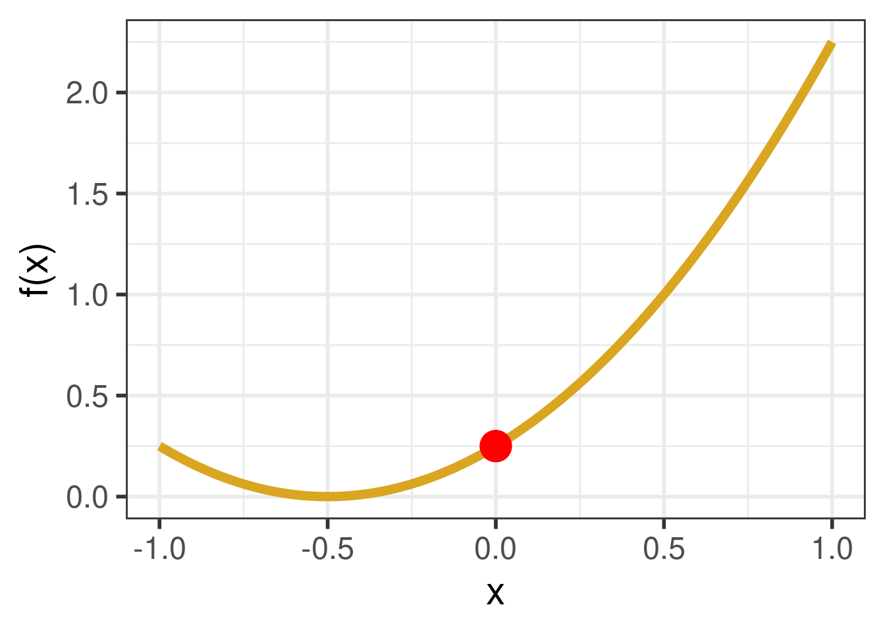

The Method of Least Squares
Fitting a regression model by minimizing RSS
Welcome to Unit IV: Prediction
As we near the end of the semester, we revisit one last time the four different claims that might be made based on the line plot found in the news story1.

- The Consumer Price Index rose 8.3% in April.
- The global consumer price index rose in April.
- The Consumer Price Index rose 8.3% because of the war in Ukraine.
- The Consumer Price Index will likely rise throughout the summer.
In this unit use, we aim to make claims like the final one, “The Consumer Price Index will likely rise throughout the summer”. This is a prediction, a claim that uses the structure of the data at hand to predict the value of observations about which we have only partial information. In midsummer, we know the date will be July 15th, that’s the x-coordinate. But what will the y-coordinate be, the Consumer Price Index?
The realm of prediction is the subject of intense research activity and commercial investment at the moment. Falling under the terms “machine learning” and “AI”, models for prediction have become very powerful in recent years; they can diagnose diseases, help drive autonomous vehicles, and compose text with eerily human sensibilities. At the core of these complicated models, though, are a few simple ideas that make it all possible.
Key Concepts in Prediction
In making predictions, the most important question is “what do you want to predict?” The answer to that question is called the response variable.
- Response Variable
- The variable that is being predicted. Also called the dependent or outcome variable. Indicated by \(y\) or \(Y\) when treated as a random variable.
The related question to ask is is, “what data will you use to predict your response?” The answer to that question is…
- Predictor Variable(s)
- The variable or variables that used to predict the response. Also called the independent variables or the features. Indicated by \(x_1, x_2, \ldots\) etc.
An analyst working at the Federal Reserve to predict the Consumer Price Index in midsummer would use the CPI as their response variable. Their predictor could be time (the x-coordinate in the plot from the newspaper article) but could also include the federal interest rate and the unemployment rate.
A second analyst working in another office at the Federal Reserve is tasked with predicting whether or not the economy will be recession within six months; that event (recession or no recession) would be the response variable. To predict this outcome, they might use those same predictors - the interest rate and the unemployment rate - but also predictors like the real GDP, industrial production, and retail sales.
The prediction problems being tackled by these two analysts diverge in an important way: the first is trying to predict a numerical variable and the second a categorical variable. This distinction in the Taxonomy of Data defines the two primary classes of models used for prediction.
- Regression Model
- A statistical model used to predict a numerical response variable.
- Classification Model
- A statistical model used to predict a categorical response variable.
The past two decades have been a golden age for predictive models, with hundreds of new model types being invented that can address regression tasks or classifications tasks or often both. To take a deep dive into this diverse landscape, take a course in statistical or machine learning. For the purpose of this course, we’ll just take a dip and focus on two models: Least Squares Linear Model for Regression and a Logistic Linear Model for Classification.
Linear Regression
We first introduced linear regression as a method of explaining a continuous numerical \(y\) variable in terms of a linear function of \(p\) explanatory terms, \(x_i\). \[ \hat{y} = b_0 + b_1x_1 + b_2x_2 + \ldots +b_px_p \]
Each of the \(b_i\) are called coefficients.
Before, we saw linear regression in a very particular context: we used it for its ability to help us describe the structure of the data set at hand. It calculates not just one but two or more summary statistics - the regression coefficients, that tell us about the linear relationships between the variables.
We’re now going to revisit to this model for its ability to also make predictions on unseen data. Before we do so, though, you should be sure you’re familiar with these concepts: correlation coefficient, slope, intercept, fitted values, and residuals. Take a moment to skim those notes:
The Method of Least Squares
When we presented the equations to calculate the slope and intercept of a least squares linear model in Unit 1, we did so without any explanation of where those equations came from. The remainder of these notes will cast some light on this mystery.
The least squares linear model is so-called because it defines a line that has a particular mathematical property: it is the line that has the lowest residual sum of squares of all possible lines.
- Residual Sum of Squares (RSS)
- For observations of an explanatory variable \(y_i\), a response variable \(y_i\), predictions of its value (fitted values) \(\hat{y}_i\), and a data set with \(n\) observations, the RSS is \[ RSS = \sum_{i = 1}^n \left(y_i - \hat{y}_i \right)^2\] where \[ \hat{y_i} = b_{0} + b_1x_{1,i} + b_2x_{2,i} + \ldots +b_px_{p,i} \]
Plugging this expression into the first equation gives us
\[ RSS = \sum_{i = 1}^n \left(y_i - (b_{0} + b_1x_{1,i} + b_2x_{2,i} + \ldots +b_px_{p,i} )\right)^2\]
So how can we use this definition to decide precisely which slope \(b_0\) and intercept \(b_1\) to use? Please watch the following 19 minute video to find out.
Algorithmic Methods
As we saw in the video, the problem of least squares can be defined as one of optimization. We would like to make \(RSS\) as small as possible. The values of the coefficients that do this are said to optimize the \(RSS\) equation. Although a direct way to find these values involves taking the partial derivatives of the third equation with respect to each coefficient \(b_0\), \(b_1\), …, \(b_p\), setting the resulting equation equal to 0, and solving for the coefficient, you could think about using a different, perhaps more intuitive method.
Consider picking a starting value for each of \(b_0\) through \(b_p\), plugging these into the third equation, and seeing what comes out. Then, try to pick another set of numbers that makes the result of the \(RSS\) equation smaller. Provided that you have a concerted method to pick the next set of numbers, you can repeat this process over and over until you find the set of numbers which yields the smallest value for \(RSS\). This process can be described as an algorithmic method to find the values of the coefficients \(b_0\) through \(b_p\).
There are many iterative algorithms that accomplish the same task, some better than others. Two examples:
- Nelder-Mead: an older and more general (and generally not as reliable!) algorithm. This is the one we showed you in the video.
- Gradient Descent: the most-used algorithm currently. Used to fit deep learning models.
The Ideas in Code
Writing a function in R
We have been using functions that already exist in either the base installation of R or in another package, such as dplyr, ggplot2 or stat20data, but sometimes it can be useful to write our own functions.
Custom functions in R can be created with the function function() (quite meta) and assigned to an object. The arguments that we would like the function to take go inside the parentheses of function(). The things that we would like the function to do go inside {}.
Here is a representation of \(f(x) = (x+.5)^2\) in R, which we are saving into the object f. Once we run the following code, we’ll have access to f in our environment and can use it.
f(x = 1.5)[1] 4Nelder-Mead on a simple function
Here, we plot the function \(f(x)\) that we described above over the \(x\) values \([-1,1]\).

We can see that the minimum value of \(f(x)\) lies between \(-1\) and \(1\). Can we find the value of \(x\) that will give us this minimum using Nelder-Mead? We can try, using the optim() function!
optim()
There are two main arguments to modify:
The function to optimize is passed to
fn. In this case, the function we made is calledf.-
You provide a starting point for the algorithm with
par.- In this situation, we are trying to find the value of \(x\) to minimize \(f(x)\), so we will enter a number. We’ll start with \(x = .5\), but you can tinker around yourself and try something different. Depending on what you start with, you may come up with something different as a final answer, so feel free to try out different numbers!
- In a linear regression context, we are trying find the values of the coefficients \(b_0\) through \(b_p\) to minimize \(\hat{y}\), so we need to input a vector of starting values, one for each coefficient. This can be done using
c().
Nelder-Mead is a random algorithm; each time you run it you’ll get a (slightly) different answer. We therefore use set.seed() to make sure the same value is printed out for the purpose of publishing these notes.
$par
[1] -0.4
$value
[1] 0.01
$counts
function gradient
12 NA
$convergence
[1] 0
$message
NULLYou don’t need to understand the entirety of the output given by optim()– just focus on the number under $par. This is the value of \(x\) that optim() thinks will give the minimum value of \(f(x)\) after. In truth, the correct value is \(-0.5\), so we didn’t fare too badly!
Summary
Prediction is the task of predicting the value of a response variable for an unseen observation using its values of other variables that are known, the predictors. The nature of the response variable determines the nature of the task (and corresponding model): regression concerns the prediction of numerical response variables, classification concerns the prediction of categorical response variables. One such regression model is the least squares linear model, which uses the line that minimizes the residual sum of squares. Finding the value of the coefficients is a task that can be solved directly using calculus (in simple settings like this one) and also with optimization algorithms (in more general settings). We gave an example of using such an algorithm, demonstrating how to write a function in R in the process.
Footnotes
Smialek, Jeanna (2022, May 11). Consumer Prices are Still Climbing Rapidly. The New York Times. https://www.nytimes.com/2022/05/11/business/economy/april-2022-cpi.html↩︎